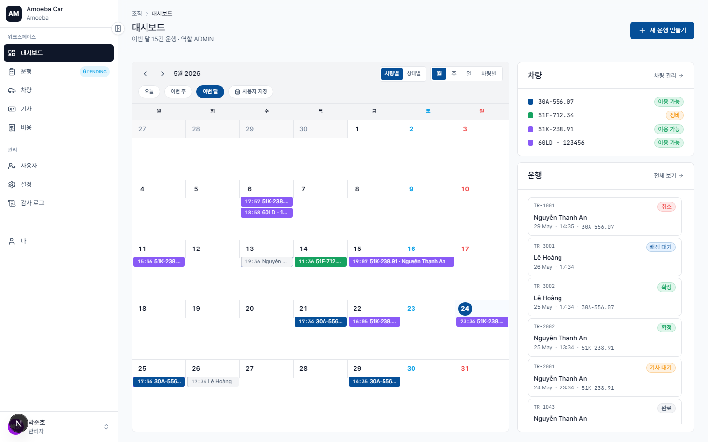

대시보드 — 전사 현황
🌐
한국어 번역 진행 중 — 이 페이지의 본문 일부는 아직 베트남어입니다. 제목·사이드바·이미지는 한국어로 제공되며, 본문 번역은 점진적으로 업데이트됩니다. 급한 경우 베트남어 원문을 참고하세요.
- URL
/dashboard— landing mặc định cho Admin- 범위
- Tất cả 운행 trong tổ chức — không lọc theo người tạo

Khác với Manager dashboard
| Admin | Quản lý | |
|---|---|---|
| Số 운행 hiển thị | Tất cả | Chỉ 운행 của mình |
| Sidebar | Đầy đủ 11 mục | 5 mục (Workspace) — không có nhóm Quản trị |
| Subtitle | "X 운행 trong tháng · vai trò ADMIN" | "X 운행 · vai trò MANAGER" |
| Quyết định | Bạn nắm toàn cảnh | Họ chỉ thấy phần liên quan đến họ |
3 chế độ xem calendar
- Theo xe — gom row theo 번호판 (dễ thấy xe nào quá tải)
- Theo trạng thái — gom theo PENDING / CONFIRMED / IN_PROGRESS / COMPLETED
- Theo thời gian — Tháng / Tuần / Ngày / Tùy chỉnh
Hành động trên dashboard
- + Tạo 운행 mới — góc trên phải, mở form Quản lý 운행
- Bấm vào card 운행 trong calendar → mở chi tiết
- Bấm vào card xe trong panel "차량" → mở trang xe